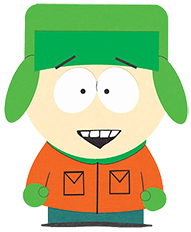
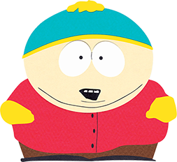

Stan Marsh |
|
| Stanley "Stan" Marsh, tiene 10 años, y esta en quinto grado de primaria. Es uno de los personajes principales de South Park, interpretado en inglés por Trey Parker. Es uno de los personajes principales junto con Kyle Broflovski, Kenny McCormick, Eric Cartman y Butters Stotch. Él es el más normal del grupo, muy maduro para su edad y bien intencionado. Su frase más famosa es "¡Oh Dios mío, mataron a Kenny!", a lo que su mejor amigo, Kyle, acostumbra a responder con un "¡Hijos de puta!".Es el único personaje que ha tenido una novia estable. |
|  | Kyle Broflovski |
| Kyle Broflovski, es un personaje ficticio en la serie animada South Park y interpretado por Matt Stone. Kyle es el más listo de los cuatro protagonistas, por lo que se le considera la voz de la razón en el grupo. A diferencia de su mejor amigo Stan, es más precavido y tiende a involucrarse menos en situaciones peligrosas. A veces muestra mejores valores morales que el resto de sus amigos. Kyle y Ike son los únicos niños judíos en el pueblo, por eso, Kyle es frecuentemente objeto de los insultos de Eric Cartman. |
|  | Erick Cartman |
| Eric Theodore Cartman aunque generalmente lo llaman simplemente por su apellido, es el total antagonista principal de South Park. Ninguno de los otros personajes considera a Cartman como su amigo y no se sabe por qué comenzaron a salir con él en primer lugar; sin embargo, suele ser la primera opción de Kyle cuando rompe su amistad con Stan. Básicamente, es un malcriado y racista. |
Kenny McCormick |
|
| Kenneth "Kenny" McCormick, Interpretado por Matt Stone. Es famoso porque no se le entiende cuando habla, debido que la capucha de su abrigo está muy ajustada.También es conocido por morir en casi todos lo episodios, a lo cual normalmente sigue una exclamación de Stan:"¡Oh, Dios mío! ¡Mataron a Kenny!, seguido de Kyle diciendo: "¡Hijos de puta!". |